Study Overview
These interactive applications enable comprehensive exploration of single-cell RNA sequencing (scRNAseq) and spatial transcriptomics datasets from healthy donor pancreas harboring precursor PanIN lesions and pancreatic ductal adenocarcinoma (PDAC) samples. Data are integrated from the following studies:
- Elhossiny AM, Kadiyala P, ..., Carpenter ES, Frankel TL, Pasca di Magliano M. Asynchronous evolution of epithelium and stroma differentiates precursor lesions from pancreatic cancer. Cancer Discovery. 2026. doi: 10.1158/2159-8290.CD-25-2001 PMID: 42165710.
- Carpenter ES, Kadiyala P, Elhossiny AM, ..., Pasca Di Magliano M. KRT17high/CXCL8+ Tumor Cells Display Both Classical and Basal Features and Regulate Myeloid Infiltration in the Pancreatic Cancer Microenvironment. Clin Cancer Res. 2024 Jun 3;30(11):2497–2513. doi: 10.1158/1078-0432.CCR-23-1421 PMID: 37851080; PMCID: PMC11024060.
- Carpenter ES, Elhossiny AM, Kadiyala P, ..., Frankel TL, Pasca di Magliano M. Analysis of Donor Pancreata Defines the Transcriptomic Signature and Microenvironment of Early Neoplastic Lesions. Cancer Discov. 2023 Jun 2;13(6):1324–1345. doi: 10.1158/2159-8290.CD-23-0013 PMID: 37021392; PMCID: PMC10236159.
- Steele NG, Carpenter ES, Kemp SB, Sirihorachai VR, ..., Frankel TL, Pasca di Magliano M. Multimodal Mapping of the Tumor and Peripheral Blood Immune Landscape in Human Pancreatic Cancer. Nat Cancer. 2020 Nov;1(11):1097–1112. doi: 10.1038/s43018-020-00121-4 PMID: 34296197; PMCID: PMC8294470.
Seurat objects of the integrated datasets are available here: 10.5281/zenodo.19305449
High resolution H&E images can are available here: 10.5281/zenodo.19304282
If you use these applications in your research, please cite the original studies listed above.
Sponsors
The applications are built using ShinyCell2 with custom modifications.
Applications
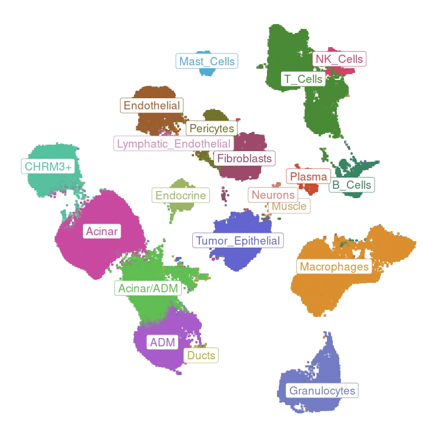
Explore ~200,000 cells from healthy donor pancreas and PDAC samples with cell type annotation and gene expression visualization.
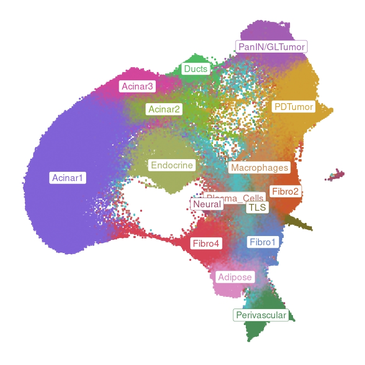
Explore ~160,000 Visium spots across healthy donor and PDAC spatial samples with spatial domain annotation and gene expression visualization.
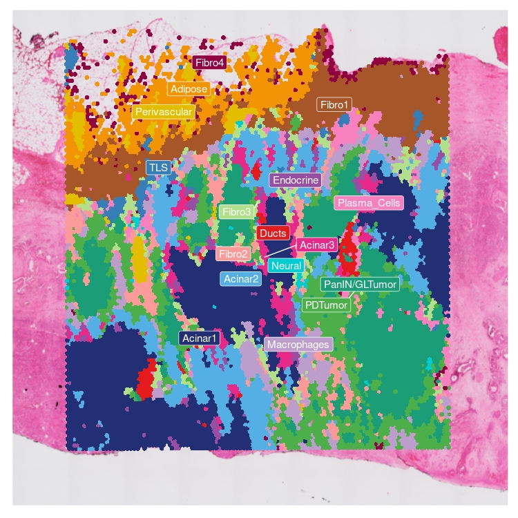
Explore 14 spatial transcriptomics samples from healthy donor pancreas and PDAC with paired H&E histology images.
Each application features an interactive sidebar for customizing visualizations:
scRNAseq Atlas & Integrated Spatial Atlas Explorers
These applications provide comprehensive tools for integrated samples exploration. Use the visualization type selector on the left sidebar to switch between plot types.
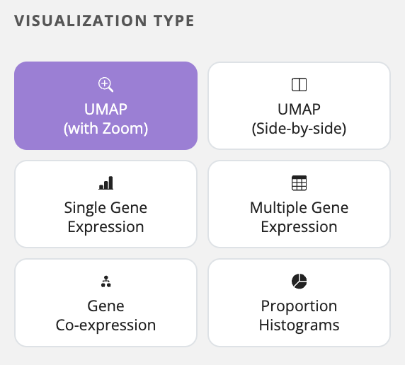
Interactive UMAP with zoom functionality to visualize cell types and gene expression patterns at multiple scales.
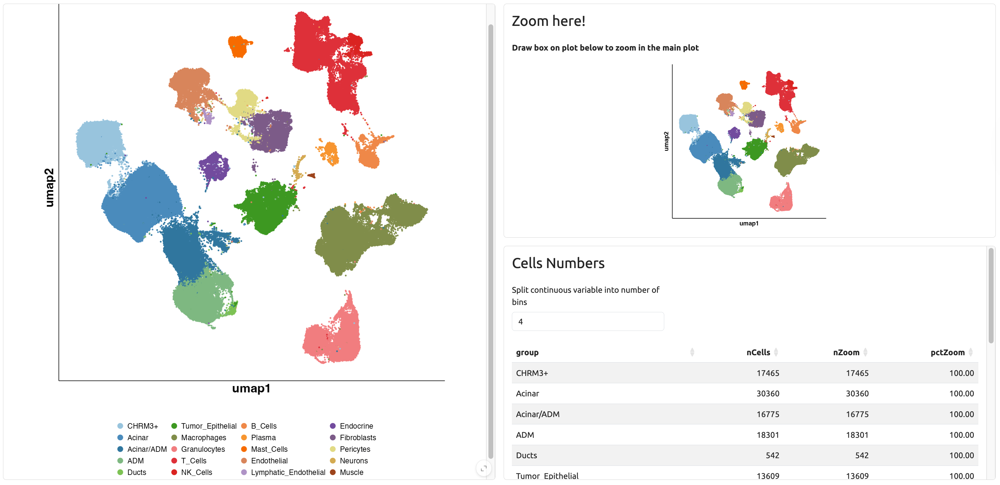
Simultaneous visualization of two genes or gene expression alongside cell type annotations for comparative analysis.
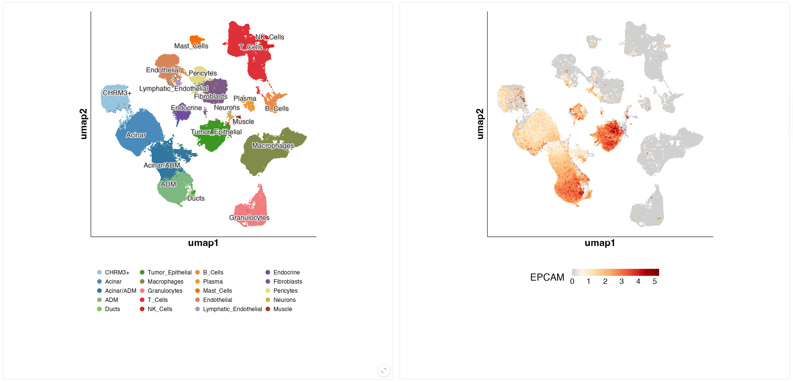
Violin and box plots showing gene expression across cell types and spatial domains, with built-in statistical testing.
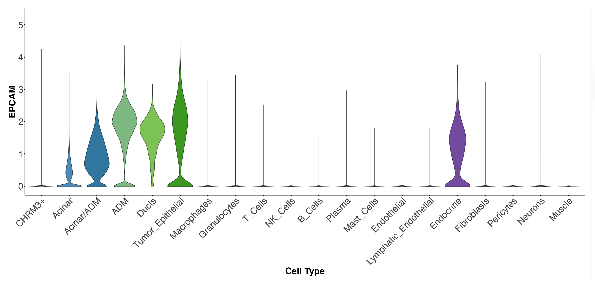
Comparative visualization of expression patterns for multiple genes of interest simultaneously.
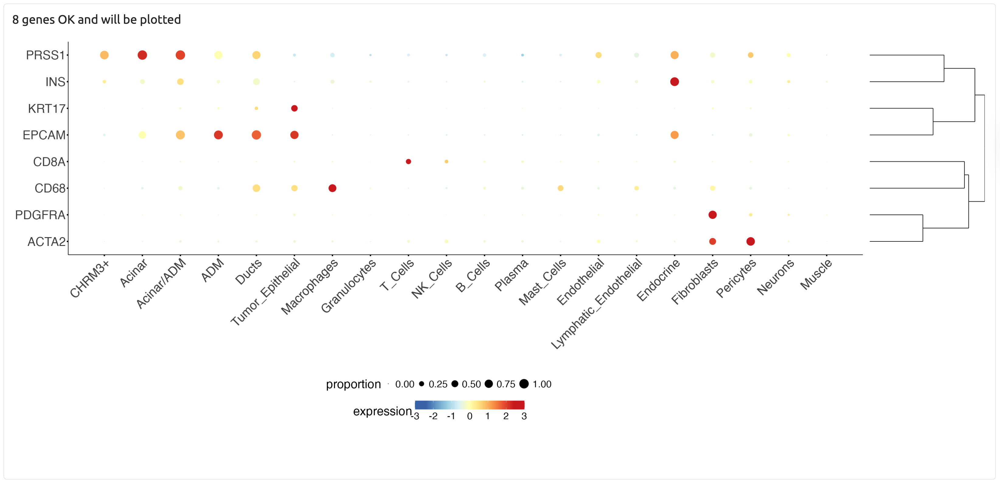
Simultaneous visualization of two-gene co-expression patterns on UMAP representations.
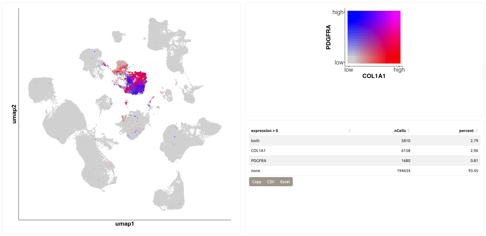
Analysis of cell type proportions across different sample groups and conditions.
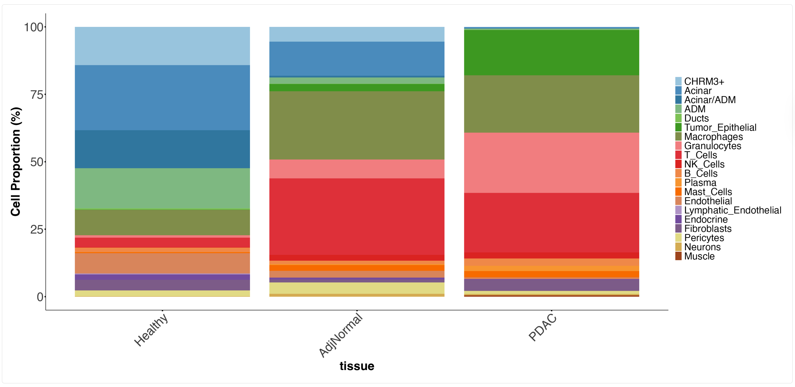
Spatial Samples Visualizer
Detailed exploration of individual spatial transcriptomics samples with corresponding H&E visualization. Full resolution images are available 10.5281/zenodo.19304282 .
Spatial mapping of cell type composition based on deconvolution results.
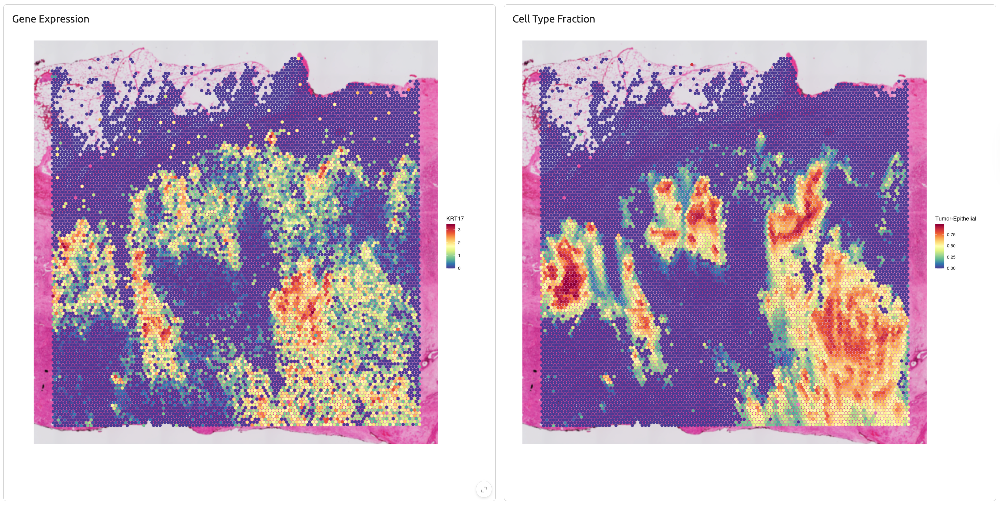
Visualization of defined tissue regions and microenvironments.
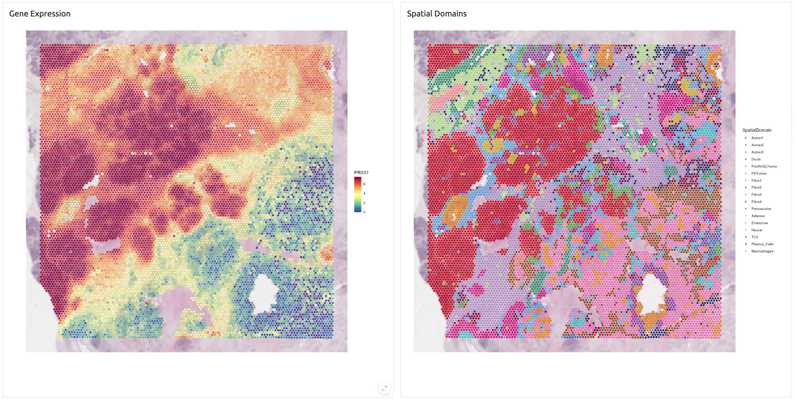
Methods
Data processing and analysis methods are described in detail in this publication. All analysis code and pipelines are publicly available here.
The applications are built using ShinyCell2 with custom modifications.
Contact
For questions, feedback, or collaboration inquiries:
- Ahmed M. Elhossiny, PhD — Study Author (hossiny@umich.edu)
- Marina Pasca di Magliano, PhD — Principal Investigator (marinapa@umich.edu)